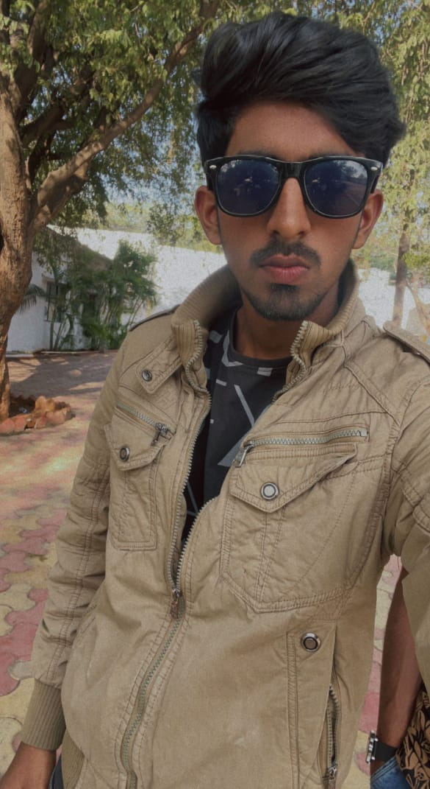

Jaleel Ansari

Summary
I am an aspiring fullstack developer who is passionate about building/learning new technologies my journey started as a naive computer science student with a passion to learn everything i could about programming world-code,linix,unix,all the while teaching myself python development with a dream to build my own application which got overshadowed by my desire to excel as a fullstack developer
Education
- Bachlor of technology-OU (2021-2025)
Projects
Tin smithy
August 2022
- Tin smithy refers to the process of creating objects or structures made from tin.
It is a traditional craft that involves the shaping and manipulation of thin sheets of tin using specialized tools and techniques.
Tin smiths typically work with a range of metals, including tin, copper, and brass, and often use soldering to join different pieces together.
Historically, tin smithy was an important craft for producing practical objects like pots, pans, and containers for storing food and drink.
However, in modern times, tin smithing has become more focused on decorative objects like jewelry, sculptures, and other works of art.
The skills required for tin smithing include an understanding of metalworking tools and techniques, as well as the ability to create and follow detailed patterns and designs.
Maths Presentation
December 2022
- A maths presentation is an opportunity to share knowledge, insights and findings about mathematical concepts and theories.
A successful presentation requires careful preparation, including research and planning of the content, visuals, and delivery techniques.
It is important to structure the presentation in a clear and logical manner, with a well-defined introduction, body and conclusion.
Mathematical concepts should be explained in a way that is accessible to the audience, using visual aids, diagrams and examples to illustrate key points.
A good maths presentation should also be interactive, engaging the audience with questions, puzzles, or quizzes, to promote participation and facilitate understanding.
To deliver a successful maths presentation, it is essential to practice, rehearse and refine the content and delivery style, paying attention to factors such as pacing, tone and body language.
SKILLS
- Python:⭐⭐⭐⭐
- HTML:⭐⭐⭐⭐
- C++:⭐⭐⭐⭐
Award and certification
- A Certificate on maths project
Others